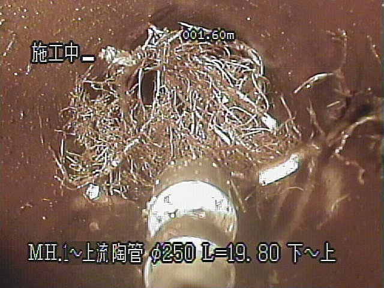
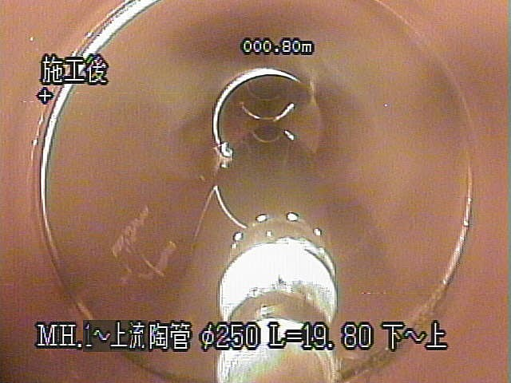
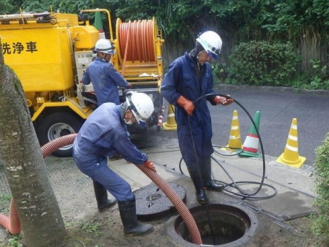
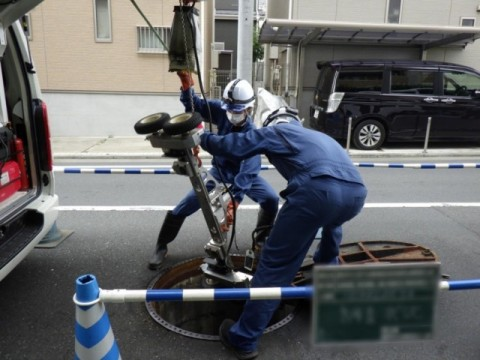
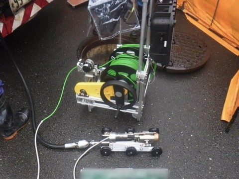
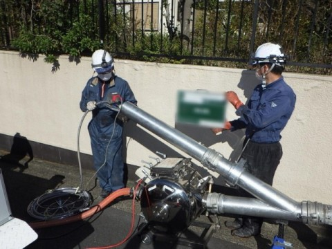
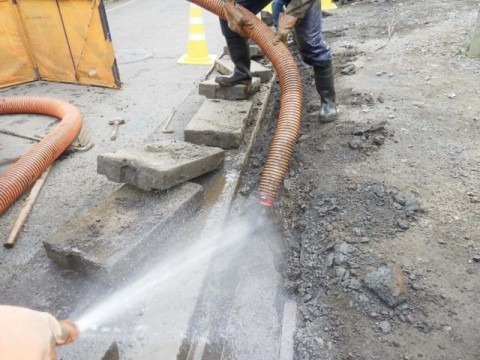
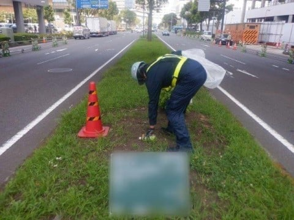
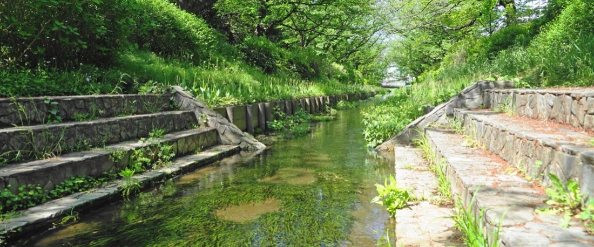

神奈川県横浜市港北区・1993年創業
道路を掘らずに、
下水道管を直す。
地中の下水道管をTVカメラで調べ、詰まりを取り、傷んだ管は掘らずに内側から直します。高度経済成長期に敷設された管路は老朽化が進み、耐用年数を超えるものが急増しています。横浜市内を中心に、365日の緊急対応で市民生活を支えています。

365日
緊急対応
1993年
創業
2拠点
本社・鴨居事業所
5団体
工法協会等に加入
BEFORE / AFTER
木の根を、取り除きました
下水道管の中は、地上からは見えません。TVカメラを入れて初めて、木の根の侵入や劣化・破損が分かります。下の2枚は同じ管の施工前と施工後です（画面表示より 陶管 φ250、L=19.80m）。

調査でできること
下水道管の劣化・破損・異常箇所を発見し、補修等の対策をご提案します。
- 下水道管内TVカメラ調査
- 大口径管・マンホール内目視調査
- 取付管空洞調査
- 管口カメラ調査
- ノズルカメラ
- キャッチカメラ
更生工事：掘らずに直す
道路を開削して新しい下水道管に取り換えるのではなく、今ある下水道管をそのまま使用し、特殊な化学樹脂を熱硬化または光硬化させて補修します。道路を掘り返さないため、通行への影響を最小限に抑えられます。
SERVICES
事業内容







CSR / SDGs
縁の下の力持ちとして
日常生活で意識することも目にすることも無い下水道管路施設ですが、雨水を速やかに川や海に流す役割や、市民の皆様の生活排水を確実に処理場まで届ける役割があり、実は市民生活を支える重要な役割を担っています。
私どもが行っている作業は、皆様の目に触れる機会がなかなか無く、いわゆる「縁の下の力持ち」かもしれません。そういった存在であるからこそ、常に誠実で、常に努力を惜しまず、常にチャレンジしていきたいと考えております。
経営理念｜至誠通天
誠心・誠意・誠実な企業活動を行います。市民生活において不可欠な下水道管路施設の維持管理業務を通じ、循環型社会を担う一員として、先人から受け継いできた自然環境や社会資本を守り、未来へと引き継ぐべく日々努力し挑戦し続けます。
災害時の協力
災害時には、行政との協定に基づき災害発生時における緊急措置等の協力会社として、地域社会に貢献します。公共下水道の維持管理という市民生活に直結した業務のため、365日の緊急対応をお受けしています。
技術継承と資格支援
技術職は現場に向かう際に車両を運転します。そのため新卒採用者に対して、普通免許以外の準中型免許ならびに中型免許の取得費用を全額負担する資格支援制度があります。社内研修（車両操作・機材説明等）や社外の技術研修会・講習会への参加も推進しています。
環境への取り組み
社内の自販機の照明は、地球温暖化対策として夕方から夜間の4時間程度のみにしています。2021年から横浜市の消灯イベント「アースアワー」に参加しています。環境対策としてグリーンカーテンも設置しています。
SDGsの取り組み：国連が提唱する「持続可能な開発目標（SDGs）」に賛同し、目標6（安全なトイレを世界中に）、目標9（産業と技術革新の基盤をつくろう）、目標11（住み続けられるまちづくりを）、目標14（海の豊かさを守ろう）への貢献を掲げています。
COMPANY
会社案内
- 会社名
- 株式会社ヤマソウヨコハマ
- 所在地
- 〒222-0026 神奈川県横浜市港北区篠原町1338番地1
TEL 045-431-2063 ／ FAX 045-431-7676
JR横浜線・横浜市営地下鉄「新横浜駅」篠原口より徒歩7分 - 鴨居事業所
- 〒224-0053 神奈川県横浜市都筑区池辺町4454番地
JR横浜線「鴨居駅」より徒歩7分 - 設立年月日
- 1993年（平成5年）2月2日
- 資本金
- 20,000,000円
- 業務内容
- 下水道管路施設維持管理業
- 加入団体
- 横浜市下水道管理協同組合／横浜道路清掃事業協同組合／FFT工法協会／クリアフロー工法協会／光硬化工法協会
- 許可・資格
- 特定建設業許可（神奈川県知事許可 特-6）
産業廃棄物収集運搬業 神奈川県 第01400003088号／東京都 第13-00-003088号 - 認定・受賞
- 横浜型地域貢献企業（2017年10月認定、2019年10月更新認定）
第七回インフラメンテナンス大賞 優秀賞（2024年1月） - 関連会社
- 株式会社ヤマソウ（1977年1月20日設立／同じ篠原町1338番地1／TEL 045-431-7671）
※ 特定建設業許可の番号は、現行サイト内で2通りの表記が確認されたため掲載していません（下記「事実の扱いについて」を参照）。
沿革
- 1993.02
- 株式会社ヤマソウにおける横浜市下水道工事および清掃事業を譲り受け設立（資本金10,000,000円）
- 2011.08
- 神奈川県知事建設業許可を取得
- 2016.08
- 神奈川県知事建設業許可を更新
- 2017.10
- 横浜型地域貢献企業に認定
- 2019.03
- 資本金を20,000,000円に増資
- 2019.10
- 横浜型地域貢献企業に更新認定
- 2024.01
- 第七回インフラメンテナンス大賞において「優秀賞」を受賞
RECRUIT
採用情報（正社員・工事スタッフ）
下水道管のTVカメラ調査、清掃および洗浄、補修工事（道路は掘らない補修工法です）。
| 雇用形態 | 正社員（試用期間6か月以内。通常は3か月にて正社員登用） |
|---|---|
| 応募資格 | 要普通自動車運転免許（大型免許 尚可）。AT車は応相談 |
| 給与 | 217,650円 〜 316,450円（現場手当含む） |
| 諸手当 | 皆勤手当 月10,000円／通勤手当 上限なし／資格手当 月4,000〜30,000円／ 家族手当 配偶者（扶養問わず）月5,000円、子1人につき（扶養のみ・高校卒業まで）月2,500円 |
| 賞与 | 年2回 |
| 勤務時間 | 8:00〜17:30（休憩90分） |
| 休日・休暇 | 日祝・土曜日は月2〜3回休み（当社カレンダーによる）／GW・夏季・年末年始・慶弔休暇 |
| 保険 | 雇用保険・労災保険・健康保険・厚生年金 |
| 福利厚生 | 横浜市勤労者福祉共済「ハマふれんど」加入／慶弔見舞金・慶弔特別休暇制度／横浜市内フィットネスクラブ法人会員 |
| 勤務地 | 神奈川 |
新卒採用者には、準中型免許・中型免許の取得費用を全額負担します。シルバー人材も積極雇用しており、多様な人材が活躍できる環境の整備に取り組んでいます。
詰まる前に、中を見ておきませんか。
下水道管の中は、地上からは見えません。TVカメラで調べれば、木の根の侵入も、管の劣化も、詰まる前に分かります。傷んだ管は道路を掘らずに直せます。緊急対応は365日お受けしています。
045-431-2063
FAX 045-431-7676
〒222-0026 神奈川県横浜市港北区篠原町1338番地1